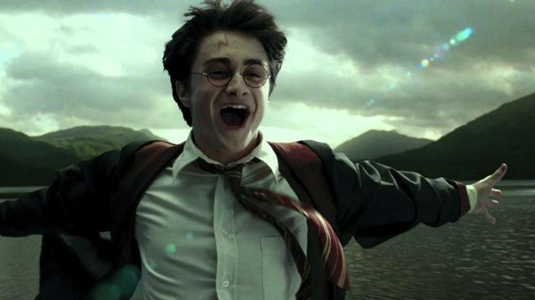

Potterverse
The Wizarding World

Diagon Alley is a cobblestoned wizarding alley and shopping area
located in London, England behind a pub called the Leaky Cauldron. Inside the alley
is an assortment of restaurants, shops, and other sights. All items on the Hogwarts
supply list can be bought at Diagon Alley.The alley was completely hidden from the
Muggle world, which was right outside of its boundaries. It was very large in area
and essentially the centre of wizarding London. Consequently, the demand for space
here was steep, and rent costed “loads of Galleons”. The Leaky Cauldron was present
long before Charing Cross Road was even planned in the nineteenth century; its true
address was number one, Diagon Alley, and it was believed to have been built some time
in the early 1500s, along with the rest of the wizarding street.
The Burrow was the family home of the Weasley family, located on
the outskirts of Ottery St Catchpole in Devon, England. It was a thoroughly magical
dwelling that became a second home to Harry Potter. A barn and chicken coop stood
nearby.The Burrow was held up with magic and was very cluttered inside, but very
welcoming at the same time. It was also stated that it was quite near to the
Lovegood House. In 1997, following the death of Albus Dumbledore, the Burrow became
the Headquarters of the Order of the Phoenix.The Weasleys were forced to abandon their
home during the height of the Second Wizarding War when they became targets of the
Death Eaters. Arthur and Molly also moved back to the Burrow following the Battle
of Hogwarts. Their home eventually became "quite the photo op for wizarding history
buffs".